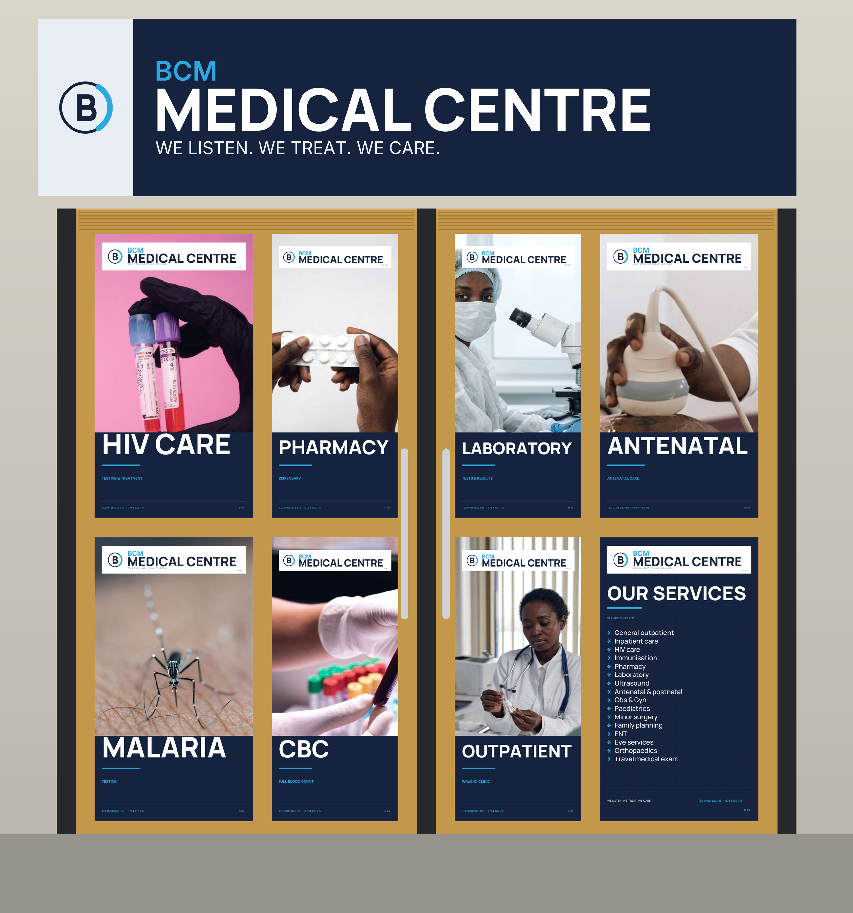
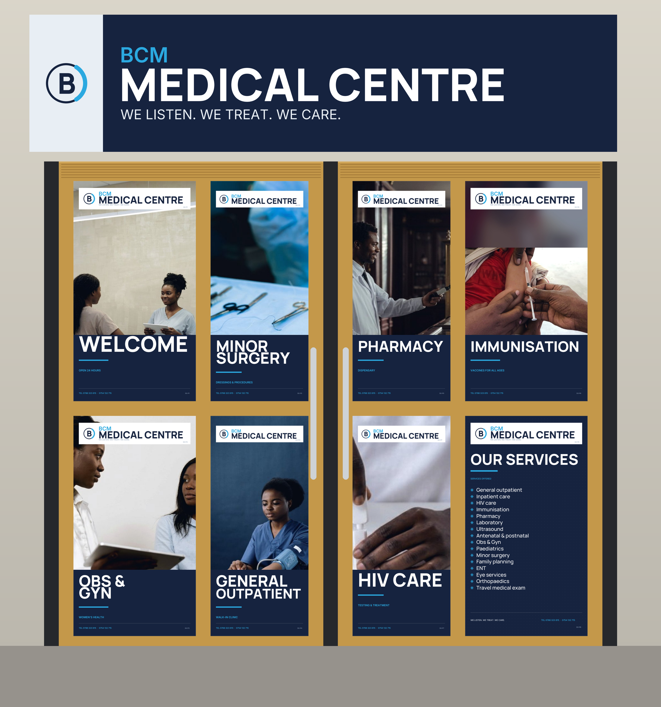
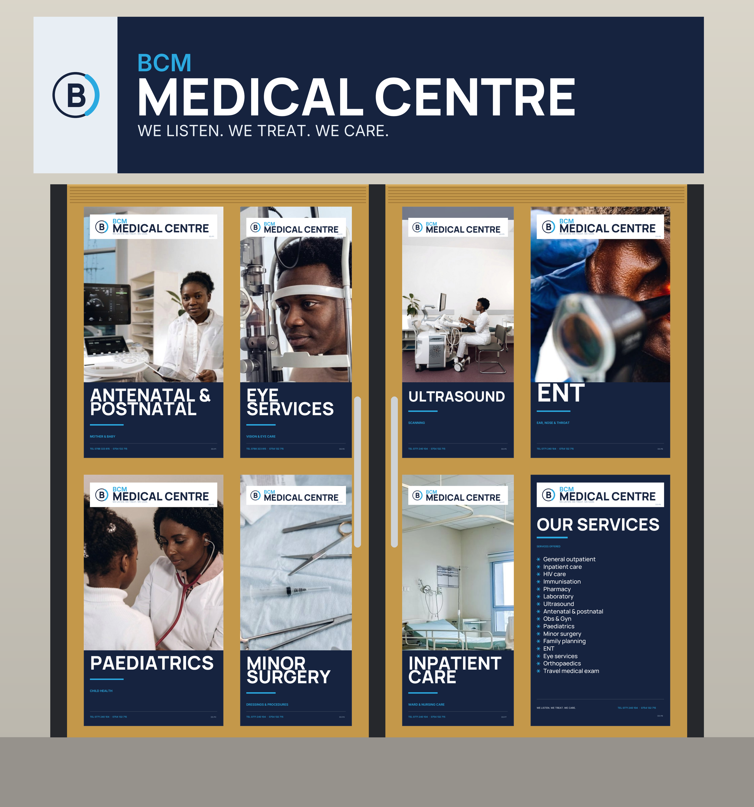
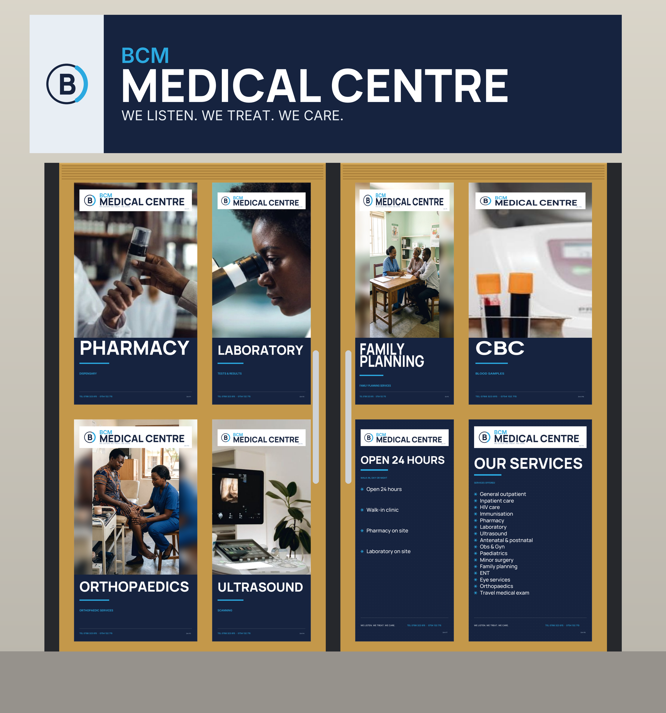
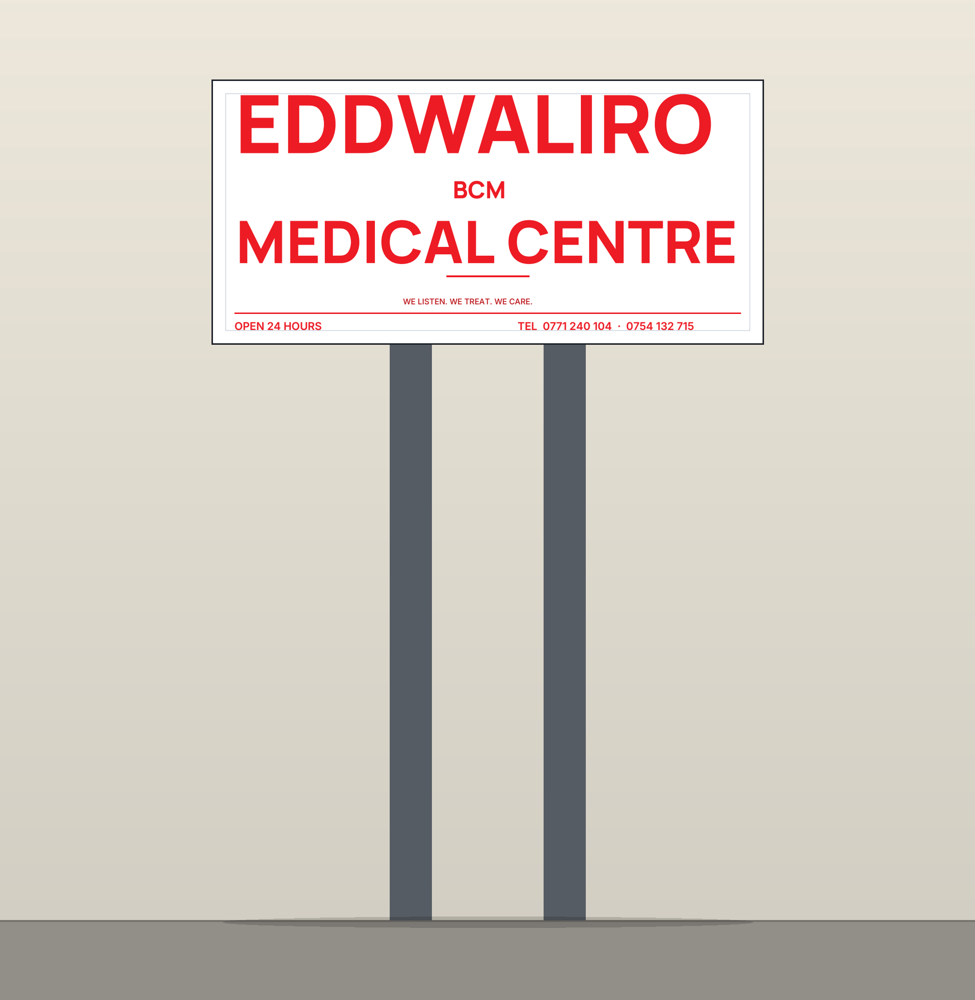
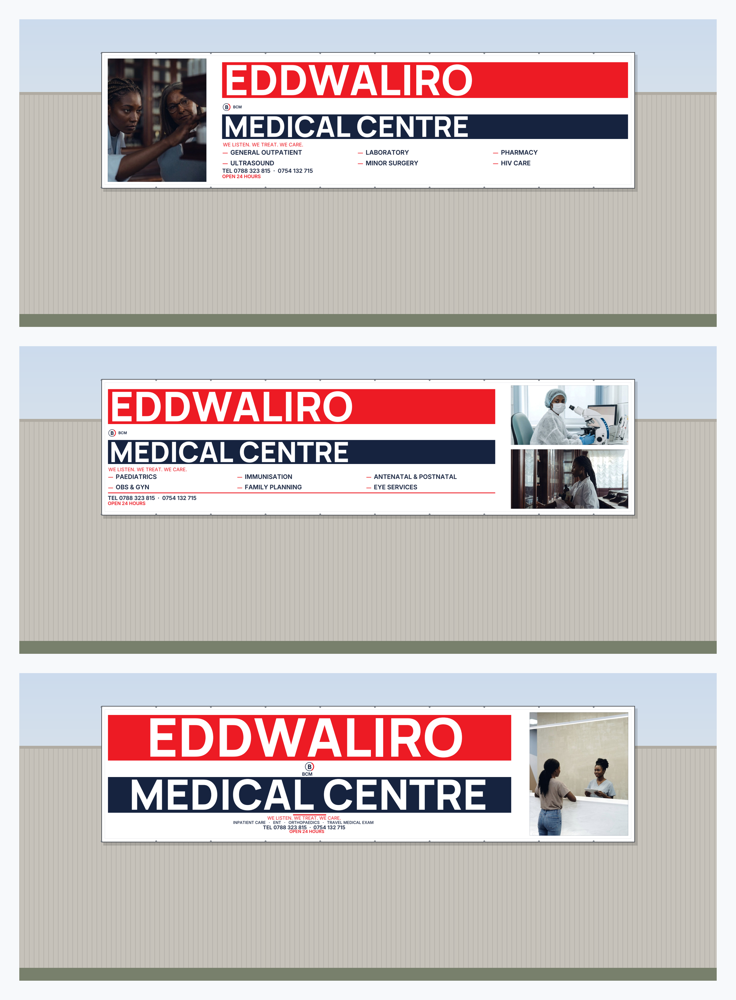

The set

01 · Door 1 — testing and treatmentOne-way vision film · 8 panes

02 · Door 2 — the welcome doorOne-way vision film · 8 panes

03 · Door 3 — family, eye, ENT and wardOpaque film · 8 panes

04 · Door 4 — dispensary and diagnosticsOne-way vision film · 8 panes

05 · Sign post panelDouble-sided panel · 1168 × 559 mm

06 · Roadside bannersPVC banners · 3.8 / 3.4 / 2.4 m × 1.0 m
Master documents
| File | What it is |
|---|---|
| BCM-Complete-Set.pdf | Nine pages — contents, pane schedules, sign post, banners, licence table, handover |
| README.md | The set in text, with rebuild commands |
| MANIFEST.csv | Every file, its type and size |
| Door 1 — testing and treatment (zip) | One-way vision film · 8 panes |
| Door 2 — the welcome door (zip) | One-way vision film · 8 panes |
| Door 3 — family, eye, ENT and ward (zip) | Opaque film · 8 panes |
| Door 4 — dispensary and diagnostics (zip) | One-way vision film · 8 panes |
| Sign post panel (zip) | Double-sided panel · 1168 × 559 mm |
| Roadside banners (zip) | PVC banners · 3.8 / 3.4 / 2.4 m × 1.0 m |
Group packages are also available on their own pages, if you want to send one door to one supplier. Photographs are Pexels Free licence, recorded in the master proof and in each group README; the B monogram is a recreation, not BCM's official logo. Printer, film and fixing values marked “confirm” are industry-typical, not quotations.